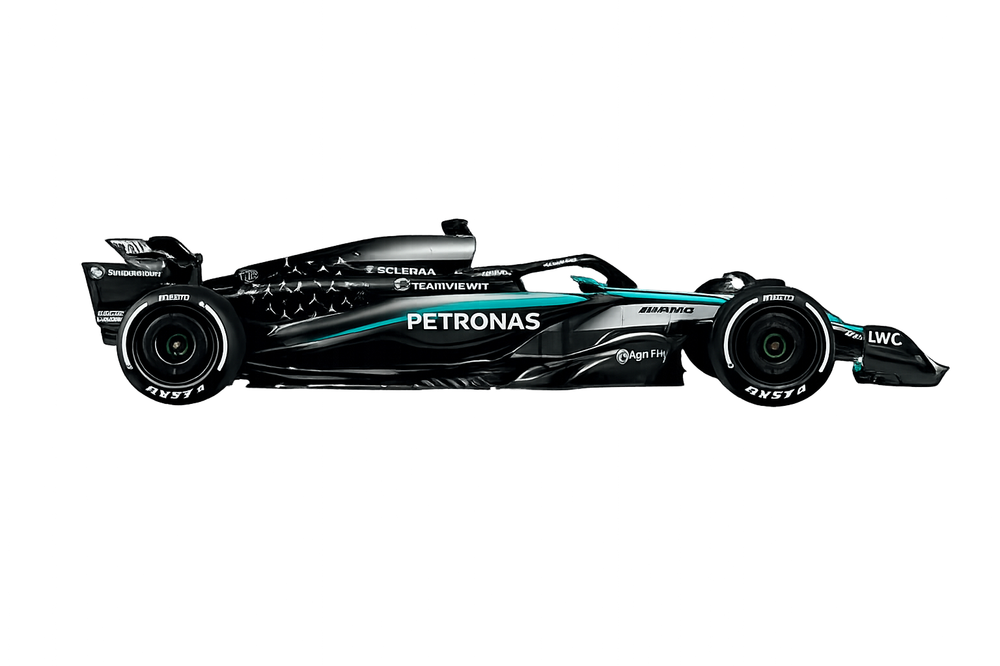
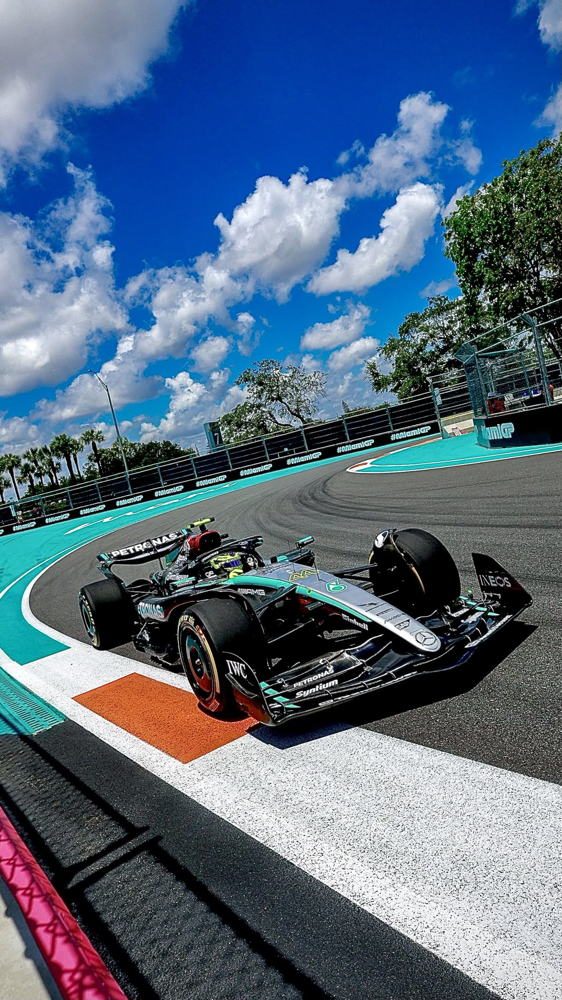

Mercedes possui uma das histórias mais importantes do automobilismo mundial. A equipe iniciou sua trajetória na Fórmula 1 na década de 1950 e rapidamente chamou atenção pela tecnologia avançada e pelos carros extremamente rápidos. Após anos longe da categoria, a Mercedes retornou oficialmente como equipe em 2010 e iniciou uma nova era de sucesso. Com investimentos em engenharia, inovação e desenvolvimento de motores híbridos, a equipe conquistou diversos títulos mundiais e marcou uma das fases mais dominantes da história da Fórmula 1. Pilotos lendários ajudaram a construir esse legado, transformando a Mercedes em símbolo de velocidade, precisão e excelência nas pistas.
A Mercedes AMG Petronas se tornou referência mundial em tecnologia e performance dentro da Fórmula 1. Com motores extremamente potentes, aerodinâmica avançada e engenharia de alto nível, a equipe desenvolve carros capazes de alcançar velocidades impressionantes mantendo estabilidade e precisão nas pistas. Cada detalhe é pensado para entregar máximo desempenho, desde o sistema híbrido até os materiais ultraleves utilizados na construção dos carros. A combinação entre inovação, velocidade e eficiência transformou a Mercedes em uma das equipes mais dominantes da história do automobilismo.


A Mercedes-AMG Petronas Formula One Team conta atualmente com uma dupla de pilotos que representa experiência, talento e o futuro da Fórmula 1: George Russell e Kimi Antonelli. George Russell se destaca pela velocidade, consistência e pilotagem agressiva, sendo uma das principais lideranças da equipe na busca por vitórias e títulos. Já Kimi Antonelli chegou à categoria como uma das maiores promessas do automobilismo mundial, impressionando pela maturidade, habilidade e enorme potencial mesmo sendo muito jovem. Juntos, os dois pilotos simbolizam a nova era da Mercedes, unindo juventude, tecnologia e competitividade nas pistas da Fórmula 1.
